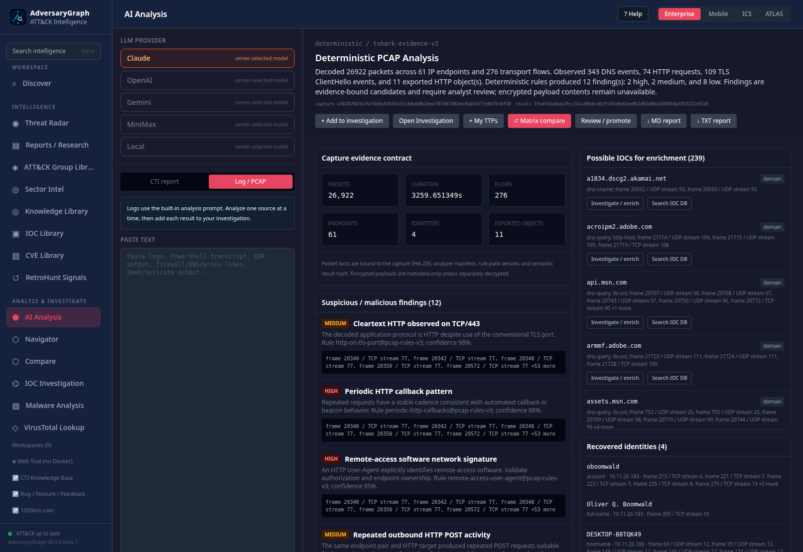
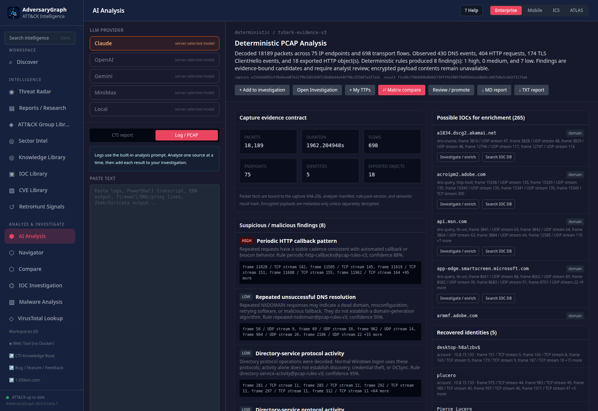
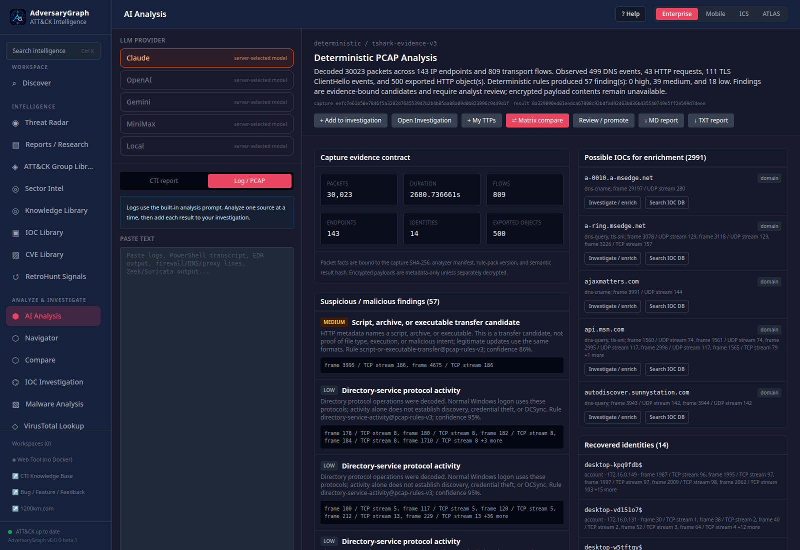
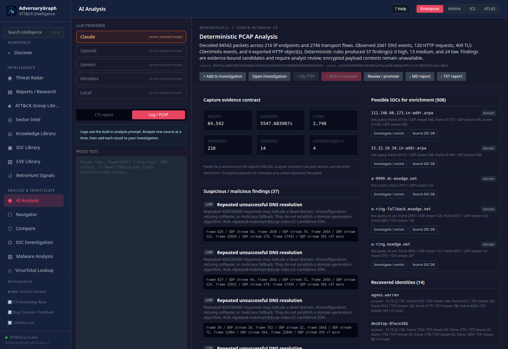
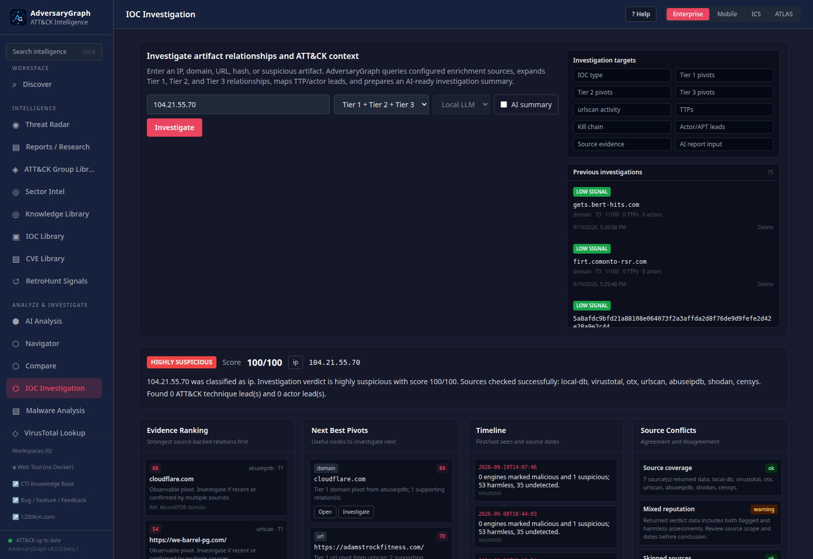

Measured 19 September 2026 · Public derivative · Historical training evidence, not approved threat intelligence.
AdversaryGraph vs Ten Malware PCAPs: What the Evidence Actually Shows
A real-instance test of deterministic packet analysis, passive enrichment, and reviewable correlations—with screenshots, packet-level evidence, and ten downloadable case reports.
A packet-analysis platform can produce an impressive report and still fail at the parts that matter: assigning an account to the correct host, retaining an important file hash, preserving evidence through the API, or distinguishing a useful intelligence lead from an unsupported attribution.
I tested AdversaryGraph against ten additional malware-traffic exercises to examine those boundaries. The work went beyond checking whether files uploaded successfully. It included packet extraction, comparison with publisher answers, defect remediation, a retest on my actual running instance, passive external enrichment, database verification, and browser-based evidence handoffs.
The headline results were 52 of 52 selected identity facts recovered, 87 of 88 selected indicators available, and 115.02 seconds of combined upload-and-analysis time. Those are useful measurements. They are not evidence of 98.86% malware-detection accuracy, complete incident reconstruction, or human-equivalent reasoning.
This article covers only these ten cases. It explains what worked, what the scores conceal, and how to inspect the evidence rather than trust the summary. Measured on 19 September 2026; published on 20 September 2026. A report and screenshot index accompanies the article; the machine-readable summary contains the ten-case totals.
Scope and safety: These are public training captures, not a live incident. Captured executables and scripts were not executed, and suspected malicious infrastructure was not contacted. External enrichment used an approved subset of public IP addresses, domains, and hashes. Raw captures, payloads, private addresses, and credentials were not submitted to those providers. Indicators in this article are historical evidence, not a current blocklist. Public addresses and domains are defanged in prose; preserved evidence files retain their original values.
Table of contents
- What this experiment measured
- The tested environment and workflow
- The ten-case results
- What each case revealed
- When the answer key disagrees with the packets
- Passive enrichment: coverage is not a verdict
- Correlations that can be audited
- Time, models, tokens, and cost boundaries
- How to verify the screenshots and reports
- What remains unproven
- Conclusion
- Related work
- References
- Follow My Work
What this experiment measured
The source corpus came from Malware-Traffic-Analysis.net's training index. The selection continued backward through directly hosted captures. The externally hosted 2023 Unit 42 quizzes were skipped, which explains the jump from July 2024 to March 2022. This was a defined acquisition choice, not a random or representative sample of current malware.
The ten captures contain 263,116 packets. Some exercises focus on one Windows client; others include several infected clients or require evidence outside the PCAP. Those differences matter when interpreting a single aggregate score.
There were three distinct phases:
| Phase | What happened | What it can establish |
|---|---|---|
| First additional-case pass, v2 | Code and outputs were frozen before publisher answers were consulted | Initial performance on these newly introduced captures; titles were visible |
| Remediation and v3 regression | Packet review exposed gaps; extraction and correlation logic were corrected | Whether fixes address known failures without breaking retained evidence |
| Final live-instance validation | The cases were exercised on the actual application, followed by enrichment and integration audits | Operational behavior and evidence consistency on the deployed revision |
The first pass already exposed 52/52 selected identity values and 87/88 selected indicators. The final run retained those totals. However, that does not mean the first implementation was equivalent to the final one: an artifact-inventory audit found thousands of omitted hashes outside the selected score.
The final retest was not blind. The cases had been inspected during development. Publisher answer material was not fed into the deterministic decoder, but answer-informed evaluation and later analyst interpretation must remain separate from native product output. The first-pass comparison, frozen implementation metadata, and preserved per-case first-pass outputs make that distinction inspectable.
Two denominators were used. The 52 identity facts cover selected IP, MAC, hostname, and account values, depending on the case. The 88-item indicator set is a declared comparison subset, including infrastructure and hashes. It also includes legitimate services observed within an infection investigation. Availability in the output does not mean the engine classified a value as malicious.
The tested environment and workflow
The final deployment was the real local AdversaryGraph installation, accessed through its browser frontend on loopback. The recorded source revision was 93a79512f6304ce719d5d32cd1b6d26960865f75. Packet parsing used TShark 4.4.18, the tshark-evidence-v3 profile, and pcap-rules-v3.
The relevant implementation is a deterministic saved-PCAP route with an internal analyzer service, structured evidence, database persistence, and investigation handoffs. AdversaryGraph has AI-assisted capabilities elsewhere, but the route tested here did not invoke an LLM. Its presence under an AI Analysis screen—and a visible provider selector—does not mean that provider processed the capture. The result itself identifies the deterministic profile. See the project repository and the per-case analyzer manifests in the native JSON files.
The operational sequence was:
Saved capture + source checksum
→ isolated decode + versioned rules
→ structured packet evidence + semantic checksum
→ persistence + API retrieval + independent repeat
→ selected public-indicator enrichment
→ typed evidence links + catalog relationships
→ draft reports + human-review boundary
The test checked each transition. A successful upload alone cannot establish that retrieved evidence is unchanged, that a graph edge reaches the correct node, or that an exported PDF contains the full packet appendix.
For these ten cases, uploads were performed through the real HTTP API; saved results, investigation handoffs, and reporting were exercised through the browser. This should not be read as ten separate browser drag-and-drop tests. External enrichment was separately orchestrated and authorized; a PCAP upload by itself did not automatically perform all nine-provider lookups.
The environment retained its existing local authentication-disabled mode. This was not a multi-user authorization acceptance test. Similarly, successful detection-reference joins were not SIEM deployments, and no malware execution was performed to validate a payload's behavior.
The ten-case results
The following measurements are from the final live run. Analysis time is the upload/analysis request duration, not the time to investigate and write the complete case report.
| Capture | Exercise | Selected facts | Selected indicators | Analysis time |
|---|---|---|---|---|
| 2021-09-10 | AngryPoutine | 4/4 | 5/5 | 5.39 s |
| 2021-10-22 | October ISC Forensic Contest | 9/9 | 5/5 | 30.94 s |
| 2021-12-08 | December ISC Forensic Contest | 3/3 | 4/4 | 21.97 s |
| 2022-01-07 | Spoonwatch | 4/4 | 6/6 | 4.29 s |
| 2022-02-23 | Sunnystation | 12/12 | 37/37 | 14.59 s |
| 2022-03-21 | Burnincandle | 4/4 | 14/14 | 7.67 s |
| 2024-07-30 | You dirty rat! | 4/4 | 5/5 | 5.40 s |
| 2024-08-15 | WarmCookie | 4/4 | 7/8 | 11.40 s |
| 2024-09-04 | Big Fish in a Little Pond | 4/4 | 1/1 | 3.56 s |
| 2024-11-26 | Nemotodes | 4/4 | 3/3 | 9.81 s |
| Total | Ten captures | 52/52 | 87/88 | 115.02 s |
Source: live evaluation and request timings. The aggregate is calculated from unrounded values.
All ten passed stored-result retrieval equality and idempotency checks. Fresh decoder calls reproduced the same semantic results. After enrichment, all ten retained identical native packet results, produced valid PDF responses, and refused unreviewed STIX exports. The post-enrichment checks and fresh-decode records preserve these results.
The rules produced 173 candidate findings. This is not a count of 173 confirmed malicious actions. It includes contextual observations, such as directory-protocol activity, that also occur in normal Windows environments.
The indicator denominator is uneven: Sunnystation contributes 37 of the 88 selected values. A high aggregate score therefore says less about generalization than ten equally weighted, independently labeled investigations would.
What each case revealed
Nemotodes: port 443 does not make traffic TLS
The November 2024 case identified 10.11.26.183, hostname DESKTOP-B8TQK49, and account oboomwald. The important network behavior was not simply a connection to port 443. The decoder observed 58 cleartext HTTP POSTs associated with 194.180.191[.]64, a NetSupport Manager/1.3 User-Agent, and a /fakeurl.htm request target. The callback cluster had a median interval of 60.154 seconds.
Together, those observations provide a useful remote-access investigation lead. They do not independently establish whether the software was authorized, which process launched it, or the complete delivery chain. A protocol decoder is valuable here precisely because a port-number-only interpretation would miss the cleartext HTTP behavior.

Figure 1. Actual saved-result view. Findings retain rule identifiers and packet references; severity and confidence are rule outputs, not calibrated probabilities of compromise.
Evidence: full report, native JSON, and publisher exercise.
Big Fish in a Little Pond: a behavior cluster is not a family classifier
For September 2024, the selected identity was 172.17.0.99, DESKTOP-RNVO9AT, account afletcher. One native rule retained 48 POST requests to 79.124.78[.]197/foots.php, with 2,046 declared body bytes across that cluster. The first cited request was frame 1668.
This is repeatable evidence of a communication pattern. It is not a standalone identification of Koi Stealer. The publisher's family conclusion uses supplied alert context; those alerts were not fed into the PCAP-only decoder. A one-indicator benchmark can therefore pass while the broader family-identification task remains unmeasured.
Evidence: full report, native JSON, and publisher answer source.
WarmCookie: the missing archive child
The August 2024 case recovered the selected identity for 10.8.15.133, DESKTOP-H8ALZBV, account plucero. It retained the selected infrastructure and the transferred ZIP/DLL hashes. It did not recover one JavaScript child hash from inside the ZIP:
dab98819d1d7677a60f5d06be210d45b74ae5fd8cf0c24ec1b3766e25ce6dc2c
That is the single missing item behind 87/88. It is a real extraction boundary, not a failed reputation lookup. Enriching the outer archive cannot make the inner file hash appear in packet extraction output. Fixing this requires bounded archive inspection, with controls for nesting depth, decompressed size, file count, and unsafe paths; it does not require executing the content.
The current native profile did not implement that step. Nor could it reveal the complete URL path of an encrypted follow-up request from TLS metadata alone. The WarmCookie family label comes from the exercise context and supporting intelligence, not an independent general-purpose family classifier.

Figure 2. A valid packet report can coexist with an unextracted archive child. Neither a successful UI workflow nor an HTTP-export inventory proves recursive artifact completeness.
Evidence: full report, declared answer reference, and publisher exercise.
You dirty rat!: useful evidence outside HTTP and TLS
The July 2024 capture exposed a gap in the first additional-case pass: meaningful custom TCP behavior was not adequately surfaced. The final rules retained a connection from 172.16.1.66 to 141.98.10[.]79:12132, lasting 508.67 seconds, with 411 packets.
A cleartext message at frame 9119 contains the software label STRRAT, along with a claimed hostname and account. The final output reports 102 matching self-identification messages. That gives an analyst a strong, directly inspectable lead rather than an opaque family guess.
The wording still matters. A software label transmitted by a client is self-reported content; it is not cryptographically authenticated identity. The hash, protocol context, and corroborating evidence should decide how strongly to use it. Observed GitHub, Maven, or public-IP services are not inherently malicious merely because they appear in this capture.
Evidence: full report, native JSON, and publisher exercise.
Burnincandle: low severity is not a clean bill of health
The March 2022 case recovered 10.0.19.14, DESKTOP-5QS3D5D, and patrick.zimmerman, together with all 14 selected infrastructure values. Yet its final native output contained eight low-severity findings and no medium- or high-severity findings.
This is an important counterexample to treating extraction coverage as detection quality. The capture includes network evidence that warrants investigation, including a conversation with 23.227.198[.]203:757, but the implemented rules did not independently reconstruct the publisher's IcedID/Cobalt Strike narrative.
A high fact-recovery score can coexist with weak prioritization. Unknown application behavior and encrypted sessions must remain visible to the analyst, even when the rule engine has no high-confidence label for them. “No high findings” must not become “no compromise.”
Evidence: full report and the correct Burnincandle exercise page. Other pages under the same date describe different infections; the capture filename and checksum prevent that source mix-up.
Sunnystation: a good score can hide missing artifacts
Sunnystation contains three client identities that must remain separate. The selected account bindings were tricia.becker, everett.french, and nick.montgomery, on different hosts. The final output retained all 12 selected identity values and all 37 selected indicators.
The first-pass artifact inventory nevertheless returned only 500 of 2,636 unique HTTP object hashes. It had hashed the exports internally, but the detailed-output cap prevented 2,136 hashes from reaching consumers. A hash that never reaches enrichment is operationally missing even if a temporary extraction step computed it.
The final design retains rich records for a bounded detailed set and a compact hash inventory for the overflow. Sunnystation now exposes all 2,636 unique hashes within the profile's limits. That fixes evidence availability, not the separate problems of classifying every file or attributing a malware family to each host.

Figure 3. The UI is a bounded view of the result. The complete retained hash inventory must be checked in the structured evidence, not inferred from the number of visible cards.
Evidence: full report, first-pass native response, final native response, and publisher exercise.
Spoonwatch: dependency downloads are not automatically malware
The January 2022 case recovered 192.168.1.216, DESKTOP-GXMYNO2, and steve.smith, with all six selected indicators available. It also preserved a packet-backed correction to the published MAC address.
The analytical trap is the file inventory. Legitimate library files can appear in a malicious workflow; calling every downloaded DLL malware would be a classification error. The native engine retained downloads and the external endpoint but did not independently identify OskiStealer or inspect the contents of an uploaded archive.
The useful output is therefore an evidence inventory with file roles still subject to review—not a list in which every binary receives the same malicious verdict.
Evidence: full report and publisher answer source.
December ISC Forensic Contest: complete HTTP coverage is not complete forensics
The December 2021 capture recovered the three selected identity values for 10.12.3.66, DESKTOP-LUOABV1, and darin.figueroa, plus four selected infrastructure values. Like Sunnystation, it exposed an output-cap problem: v2 returned 500 unique HTTP hashes where the export inventory contained 2,055. V3 retained the missing 1,555 in its compact index.
That improvement should not obscure the remaining scope gap. The native profile did not implement the broader email extraction/classification and infection-onset analysis described in the case comparison. Recovering every supported HTTP object does not recover every relevant artifact from SMTP, encrypted traffic, or an incomplete capture.
Evidence: full report, first-pass comparison, and publisher contest page, which links its answer diary. The answer diary presented an anti-bot challenge during article-source verification; the preserved experiment comparison is distinguished from a fresh successful web fetch.
October ISC Forensic Contest: the original task needs more than a PCAP
The October 2021 case recovered nine selected identity values across three hosts and all five selected indicators. The account bindings were marcus.cobb, kevin.henderson, and agnes.warren.
However, the original contest asks the analyst to associate three separate malicious emails with their infected hosts and users. Those email files were not supplied to this PCAP-only engine. A 9/9 identity result therefore does not mean the original contest task was completely solved.
This is a scope problem, not a reason to adjust the score upward. The additional evidence must be ingested and its linkage tested before claiming email-to-host reconstruction. The publisher's analysis explicitly describes that task and also notes a missing HTTPS acquisition in the capture.

Figure 4. Retaining multiple client identities is necessary, but it does not establish the relationship to external email files that the engine never received.
Evidence: full report and native JSON.
AngryPoutine: a file match is not actor attribution
The September 2021 case recovered 10.9.10.102, DESKTOP-KKITB6Q, and hobart.gunnarsson. The selected infrastructure and DLL hash were available, giving 4/4 identity values and 5/5 selected indicators.
The publisher's BazarLoader and TA551 context is useful for comparison, but neither a generic file-transfer rule nor the presence of a matching infrastructure value constitutes native actor attribution. The final ten-case enrichment run produced no actor leads, and the case records did not acquire automatic actor associations.
This is a case where preserving the distinction between a source assertion and an accepted case conclusion is more valuable than forcing an actor name into the report.
Evidence: full report and publisher answer source.
When the answer key disagrees with the packets
Publisher answers are comparison material, not infallible packet truth. Five discrepancies were verified against the captures. The correction process retained the literal published value, the observed alternative, a display filter, and supporting frame counts.
| Case | Field | Published value | Packet-backed value | Frames matching packet-backed value |
|---|---|---|---|---|
| Nemotodes | C2 address | 194.180.191[.]164 |
194.180.191[.]64 |
132 |
| WarmCookie | Follow-up address | 172.67.170[.]169 |
172.67.170[.]159 |
1,143 |
| You dirty rat! | Remote address | 141.98.10[.]69 |
141.98.10[.]79 |
411 |
| Burnincandle | Client address | 10.0.18.14 |
10.0.19.14 |
15,350 |
| Spoonwatch | Client MAC | 95:5c:8e:32:58:f9 |
9c:5c:8e:32:58:f9 |
5,880 |
The tested filters found zero matching frames for the conflicting published alternatives. The conflict evidence supplies exact, executable filters and initial matching frames. These counts describe the particular filters, not unique connections or attack events.
Against literal publisher values, the selected results would be 50/52 identity facts and 84/88 indicators. Against packet-verified values, they are 52/52 and 87/88. Both views belong in the record. Quietly changing an answer key and reporting only the higher score would make the experiment harder to audit.
For example, after acquiring the exact Nemotodes capture, this read-only TShark command inspects the protocol evidence without contacting the address:
tshark -n -r 2024-11-26-traffic-analysis-exercise.pcap \
-Y 'http.request && ip.addr == 194.180.191.64 && tcp.port == 443' \
-T fields -e frame.number -e ip.src -e tcp.dstport \
-e http.request.method -e http.request.uri -e http.user_agent
The address is intentionally not defanged inside this runnable offline filter. The -n option disables name resolution; -r reads the supplied file rather than capturing live traffic. For like-for-like verification, use the recorded TShark 4.4.18 environment; a host-installed version may differ. Use a patched analysis environment and do not execute exported content. These options are documented in the TShark manual.
Passive enrichment: coverage is not a verdict
The final ten-case subset contains 52 unique enriched indicators: 16 public IPv4 addresses, 16 domains, and 20 SHA-256 hashes. One indicator is shared between cases, producing 53 case–indicator associations. This enrichment selection is separate from the 88-item extraction benchmark; it is not a claim that all 88 comparison values were queried.
The approved external sources were VirusTotal, ThreatFox, MalwareBazaar, AlienVault OTX, urlscan, GreyNoise, AbuseIPDB, Shodan, and Censys. Local database lookups were recorded separately. Each saved result preserves its source outcomes, and an independent database audit checks that persistence did not alter the returned evidence.
| Source | Processed response | Not found | Type skipped | Final errors |
|---|---|---|---|---|
| Local database | 52 | 0 | 0 | 0 |
| VirusTotal | 50 | 2 | 0 | 0 |
| ThreatFox | 1 | 51 | 0 | 0 |
| MalwareBazaar | 7 | 13 | 32 | 0 |
| AlienVault OTX | 52 | 0 | 0 | 0 |
| urlscan | 52 | 0 | 0 | 0 |
| GreyNoise | 0 | 16 | 36 | 0 |
| AbuseIPDB | 16 | 0 | 36 | 0 |
| Shodan | 9 | 7 | 36 | 0 |
| Censys | 32 | 0 | 20 | 0 |
Each row has a denominator of 52 unique indicators. A processed response can contain zero results or no adverse assessments. Not found is not a benign verdict; type skipped is not a failed request. The local database returned no exact primary matches for this selected set. That is a coverage observation, not evidence that the captures were harmless. Source: deduplicated enrichment metrics.
Historical captures also create a time mismatch. A 2026 reputation response is not a snapshot of what a service knew in 2021. ThreatFox, for example, documents exclusion of indicators older than six months from its API/export data. That policy can limit historical coverage, but it does not prove why each individual query missed. ThreatFox API documentation.
The shared-hosting score that should not become a blocking rule
One result deserves more attention than a successful API status. The WarmCookie-associated shared Cloudflare address 104.21.55[.]70 received a platform heuristic score of 100/100, while its saved VirusTotal evidence reported zero malicious, one suspicious, and 53 harmless assessments.

Figure 5. An actual calibration problem, not a synthetic illustration. The platform's high score and the provider evidence are both preserved. Do not interpret this score as a 100% probability that the shared address is malicious.
A graph can accumulate suspicious hosted-content relationships around shared infrastructure. That does not justify blocking every tenant of the address. The relevant scope may be a hostname, URL, file, or historical relationship rather than the IP as a whole.
The defensible conclusion is that enrichment integration worked, while score calibration still needs work. The screenshot is useful because it makes the tension visible; the public provider summary preserves the platform score and provider outcome summary; bulk provider responses are retained privately, not redistributed.
Correlations that can be audited
For these ten cases, provider results produced 113 distinct ATT&CK technique leads. Of those, 99 resolved to the current local catalog, with 99 associated detection-strategy links. The remaining 14 stayed unresolved rather than being silently relabeled. These ten-case numbers are intentionally separate from the larger parent experiment.
A valid catalog join proves that an identifier resolves to a catalog record. It does not prove that the packet capture demonstrates the technique. A sandbox report about a submitted hash, a related infrastructure pivot, and a native packet behavior are different evidence sources and must retain that distinction.
The case-to-enrichment audit verified 53 exact, typed joins:
| Provenance level | Associations | What is retained |
|---|---|---|
| Packet or exact-flow frame evidence | 33 | A capture-backed observation with frame references |
| Exported-object extraction record | 20 | Capture checksum, artifact identity, object hash, and extraction provenance; no exact object-to-frame mapping |
The second category is useful evidence, but weaker for navigation back to specific packets. An IP-flow frame does not prove where an exported file begins. The reports disclose that gap instead of inventing a frame number.
All ten audited case graphs retained bound edge endpoints, distinct edge identifiers, and their expected packet-to-provider links. Provider assertions remained advisory. There were zero actor leads, zero case actor associations, and zero automatic intelligence promotions in this subset. Unreviewed STIX export was refused for every case.
Eight saved lookups retain earlier node-ID casing. Replaying the final code preserved relationship content and risk scores for all 52 lookups, but those eight do not have identical regenerated graph identifiers. The audit records this distinction rather than silently rewriting historical results.
Evidence: database correlation audit and capture-to-provider joins. These are separate from the UI screenshots: a graph that renders successfully is not, by itself, proof of correct relationships.
Time, models, tokens, and cost boundaries
The combined upload-and-analysis duration was 115.02 seconds, or about 11.50 seconds per capture. The final successful enrichment requests for the 52 unique indicators contributed 402.61 aggregate request seconds, about 6m43s.
Those two totals are not an end-to-end stopwatch. Enrichment used pacing; the parent run interleaved cases; prior failed or superseded attempts, builds, debugging, browser checks, and report authoring are not included in the successful-request subtotal. Adding the totals would not establish the time required to complete ten investigations.
| Component | Model usage | What was measured |
|---|---|---|
| Native packet extraction and deterministic rules | No LLM | Per-request timings and retained outputs |
| Tested passive enrichment and structured correlations | No LLM; AI summaries disabled | Saved responses, request timings, provenance and persistence checks |
| Coding assistance, interpretation, and article writing | Separate assistant work | Exact token usage and per-case authoring time were not instrumented |
The pipeline therefore used zero LLM calls and zero LLM tokens. That does not make the full engineering experiment free: compute, storage, provider access, and analyst effort still have costs. No complete monetary cost measurement was collected.
There was no agent-only run of these same ten cases and no timed human control. Consequently, this experiment cannot establish that AdversaryGraph outperformed an AI agent or a human analyst. A theoretical division of labor is reasonable—automation for consistent extraction and bookkeeping, an analyst for causality and context—but it is not a measured human-performance result.
How to verify the screenshots and reports
The supplement includes a ten-case report index, complete analyst dossiers, native Markdown/PDF reports, structured native responses, derived provider summaries, and focused validation records. Native PDFs remain draft evidence exports; they should not be mistaken for human-approved incident conclusions.
For each case, the report index links the full report, native PDF, native JSON, detailed enrichment, and two screenshots. The article embeds representative views; the complete gallery supplies all 20.
The screenshots were freshly captured from the actual local application while reopening saved results. The browser script allowed only local read requests, made no provider investigation calls or case changes, and compared displayed API responses with the archived results. Only normal navigation and dismissal of a status popup were used. The images were not edited, reconstructed, or generated. Their verification record includes timestamps, session references, and image hashes.
This is presentation evidence, not a new timing run. Some surrounding UI history can show unrelated saved investigations; those entries are not part of the ten-case counts. All raw packet-result and provider-result comparisons refer to the selected case or indicator.
Three levels of proof should stay separate:
| Question | Best evidence |
|---|---|
| Did the application display the saved result? | Screenshot plus browser response comparison |
| Did the result survive persistence and handoff unchanged? | API/database audits, semantic checksums, exact graph joins |
| Is the security interpretation justified? | Packet fields, frame references, artifact provenance, source context, and analyst review |
To inspect the supplement without running malware or contacting any provider, use Python 3, jq, and standard checksum tools from the extracted article directory:
sha256sum -c SHA256SUMS
jq '.totals' evidence/summary.json
jq '.[] | select(.date == "2024-08-15")' evidence/live-metrics.json
jq '.lookups | all(.stored_exact and .ai_disabled)' evidence/enrichment-database-audit.json
These commands check packaged file integrity and inspect retained results. A passing checksum shows the files match the manifest; it does not independently certify every interpretation inside them. To validate packet claims, obtain the exact source capture from the linked publisher, compare its SHA-256 with capture acquisition, and apply the report's display filters in Wireshark or TShark.
The archived first-upload metrics deliberately retain earlier failures, including the initial PDF-export error. Final PDF success belongs to the later checks and fixed PDF files; historical rows were not rewritten to make the run look clean. This is why evidence needs chronology rather than a single green status.
The package excludes raw PCAPs, exported malware, credentials, and database backups. Publisher answer archives are linked, not redistributed. The public reports remove workstation paths and local-only session URLs. Native PDFs and the 20 screenshots retain their original bytes; native JSON and audit files are public derivatives. Provider summaries replace bulk third-party responses. Publication boundaries and provenance document these transformations and the limits of independent public replay.
What remains unproven
The first and final headline scores are strong within a narrow definition. Several important analytical capabilities remain outside that definition.
Archive and protocol completeness. The WarmCookie child hash is missing. SMTP/email extraction is incomplete, encrypted contents remain unavailable, and complete HTTP hashing is not complete recovery of all malicious artifacts.
Autonomous incident reasoning. The native rules do not independently reconstruct every infection chain, assign every malware family, determine exact compromise onset, or establish endpoint execution. Burnincandle's low-only result demonstrates why fact availability and incident prioritization need separate evaluations.
Calibration and benign behavior. The shared-hosting example shows a risk score that should not drive an automatic block. No representative benign corpus was used to establish a false-positive rate for these ten cases. A collection of known-malicious exercises cannot measure specificity by itself.
Historical intelligence. Provider results describe what was returned at lookup time, not necessarily what was true or available at capture time. Missing provider records remain unknown. Current reputation is not retroactive ground truth.
Independent generalization. Titles were visible, cases were inspected during remediation, and the final run was a regression. There was no blinded family-classification benchmark or controlled analyst comparison. The artifact caps and first-pass omissions also show how a selected benchmark can miss material defects.
The next meaningful evaluation would freeze the implementation and its rubric, then introduce unseen malicious and benign captures with complete task-level ground truth. It should separately measure extraction, host binding, behavioral detection, false positives, family claims, evidence completeness, and analyst effort. A single percentage cannot represent all of those dimensions.
Conclusion
The ten-case test shows that AdversaryGraph can perform repeatable packet extraction, retain selected host identities and infrastructure, attach passive intelligence, and carry evidence through a real investigation workflow. The final run recovered all 52 selected identity facts and 87 of 88 selected indicators, while preserving audit records that make those numbers inspectable.
The more useful findings sit behind the score: two output caps hid 3,691 HTTP hashes; one archive child remained unextracted; an exercise required email evidence the engine never received; an infected-case investigation produced only low-severity native findings; and a shared-hosting address received an overconfident risk score.
Those are not reasons to discard automation. They are reasons to structure it carefully. Keep observations separate from conclusions, preserve missing evidence, make every relationship traceable, and require review before turning a candidate into accepted intelligence or a blocking action.
The result is a stronger evidence workflow—not a demonstrated replacement for an investigator.
Related work
This is a separate ten-case platform regression, not a rerun of the original AI Agent vs. Human with Wireshark six-case experiment. That earlier experiment used Daybreak Blue at extra-high reasoning effort; it is not a measured model baseline for these ten cases. Explore the AdversaryGraph platform, CTI-to-detection workflow, DFIR learning hub, and malware-analysis learning hub.
References
- Malware-Traffic-Analysis.net training exercises — corpus selection and original exercise links.
- AdversaryGraph repository — implementation context; this experiment records revision
93a79512f6304ce719d5d32cd1b6d26960865f75, not an unspecified latest build. - TShark manual — saved-capture reading, field extraction, and display-filter options.
- ThreatFox API documentation — provider behavior and historical-indicator expiration policy.
- October 2021 ISC contest analysis — original email-to-host task and packet-coverage limitations.
- Ten-case report index and publisher sources — individual dossiers, PDFs, JSON, screenshots, and exercise/answer links.
- First-pass and final comparison, live evaluation, and publisher conflicts — score definitions and discrepancies.
- Enrichment metrics, database audit, and packet-to-provider links — provider outcomes and correlation evidence.
- Screenshot verification and source provenance — presentation and artifact integrity.
Follow My Work
I publish practical cybersecurity research, CTI workflows, detection engineering notes, malware-analysis projects, AI-security research, open-source tools, labs, and technical guides.